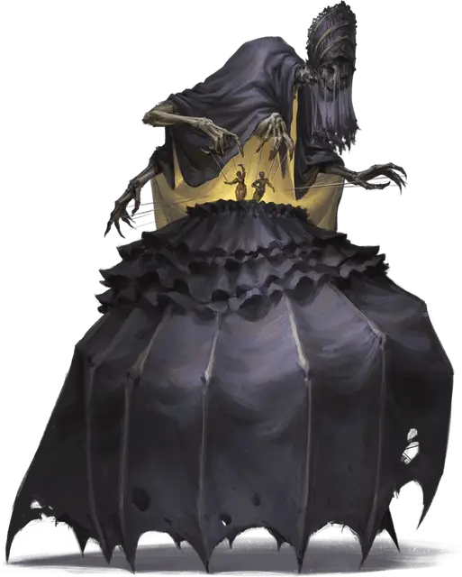

Энделин Лунная погибель
Endelyn Moongrave
Средняя Фея (Карга), нейтрально-злая, именной НИП

Класс Доспеха 17 (природный доспех)
Хиты 114 (12к8 + 60)
Скорость 30 футов, лазая 30 футов
| мод | спас | ||
|---|---|---|---|
| СИЛ | 20 | +5 | +5 |
| ЛОВ | 13 | +1 | +1 |
| ТЕЛ | 20 | +5 | +8 |
| мод | спас | ||
|---|---|---|---|
| ИНТ | 13 | +1 | +4 |
| МДР | 10 | +0 | +3 |
| ХАР | 17 | +3 | +6 |
Навыки Восприятие +3, Магия +7, Обман +6, Скрытность +4
Чувства истинное зрение 60 футов, пассивное Восприятие 13
Языки Общий, Сильван, Эльфийский
Опасность 6 (2300 опыта)
Бонус мастерства +3
Особенности
Дар бессмертия. Энделин невосприимчива к любому воздействию, которое могло бы состарить её и она не может умереть от старости.
Затмевающая судьбу. Энделин может быть убита, только если ее количество хитов уменьшится до 0 во время солнечного затмения или когда она находится в пределах 60 футов от символического изображения одного из них. В противном случае Энделин исчезает в облаке чернильного дыма, когда ее хиты опускаются 0, вместе со всем, что она носила или несла, и появляется спустя 24 часа в том же месте или в ближайшем свободном пространстве.
Неестественная осведомленность. Энделин нельзя застать врасплох.
Совместное колдовство Шабаша Песочных часов. В редких случаях, когда все три ведьмы Шабаша Песочных часов находятся в пределах 30 футов друг от друга, любая из них может использовать действие, чтобы наложить одно из следующих заклинаний, не требующее материальных компонентов (Сл спасброска от заклинаний 14): обнаружение мыслей [detect thoughts], рассеивание магии [dispel magic], перст смерти [finger of death], находчивость [glibness], поиск существа [locate creature], множественное внушение [mass suggestion].
После того, как заклинание из этого списка было наложено, ни один член шабаша не может наложить это общее заклинание снова до следующего рассвета, когда шабаш восстановит все свои общие заклинания.
Действия
Мультиатака. Энделин совершает две атаки Плетью кукольника
Плеть кукольника. Рукопашная или дальнобойная атака заклинанием: +6 к попаданию, досягаемость 5 футов или дистанция 60 футов, одно существо. Попадание: 17 (4к6 + 3) урона психической энергией и если цель Большого размера или меньше, Энделин телекинетически перемещает её на расстояние до 10 футов в любом направлении по горизонтали.
Использование заклинаний. Энделин накладывает одно из следующих заклинаний, используя Харизму в качестве базовой характеристики (Сл спасброска от заклинаний 14):
• Неограниченно: обнаружение магии [detect magic], волшебная рука [mage hand];
• 2/день каждое: гадание [augury], превращение [polymorph];
• 1/день: уход в иной мир [plane shift] (только на себя).
Описание
Энделин, также известная под именами Стелющаяся Лин и Горький конец, является самым молодым членом Ковена Песочных часов. Люди приходят к ней, чтобы узнать о своем будущем, которое она излагает с помощью гротескных театральных представлений. В качестве платы она отнимает у каждого клиента часть его свободы воли, не позволяя ему совершать определенные действия в своей жизни. Её просители часто узнают об ужасной участи, которая их ожидает, но оказываются неспособными предотвратить это из-за ужасающих условий их сделки.
Одержимость Энделин трагедией и безнадежностью распространяется и на ее собственную жизнь; она предвидела свою собственную смерть во время солнечного затмения. В глубине её замка находится работающее на молнии устройство, называемое Планетарий трагедий, пощёлкивающее и крутящееся днём и ночью, давая Энделин представление о ее ужасной судьбе.